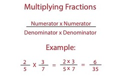
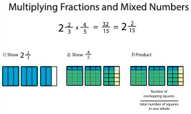

What You Should Know - IQ Key: Compare Machines
 Important Vocabulary
Important Vocabulary
- Force - something that changes the motion of an object
- Energy - amount of work needed to exert force on an object or make something happen
- Motion - the change in an object's position over time
- Machine - a device that is designed to make work easier
- Work - the measure of energy transferred from one object to another
- Displacement - the shortest length from an object's starting point to its ending point
- Improper Fraction - a fraction where the numerator is larger than the denominator
- Visual Fraction Model - a model that helps you visualize just how fractions can be added, subtracted, multiplied, and divided
Machines Use Energy to Make Work Easier
The job of a machine is to make work easier.
Force is anything that changes the motion of an object.
Lifting a box is an action that makes the object move, so it is an example of force.


A machine needs a source of energy in order to do work.
With some machines, you may be the source of energy, as you see here.
The wind, sun, and batteries are examples of other energy sources.
Multiplying Fractions
To multiply fractions, multiply the numerators and then multiply the denominators.
For example, 3/5 × 1/7 = 3×1 / 5×7 = 3/35.
Multiplying the numerators of the two fractions gives 3×1=3 as the numerator of the product. Multiplying the denominators of the two fractions gives 5×7=35 as the denominator of the product.

Visual Fraction Models
Multiplying fractions can be represented with visual fraction models as well. You do this by partitioning a square or rectangle both vertically and horizontally to represent each of the fractions. It does not matter which fraction is represented vertically and which fraction is represented horizontally.
For example, to find 2/3 × 4/5, first partition the fraction model horizontally to represent 2/3, as in Step 1 below. Notice that 2 out of the 3 rows are shaded. Then partition the fraction model vertically to represent 4/5, as in Step 2 below. Notice that 4 out of 5 columns are shaded. The region where the shading overlaps represents the product. Find the number of overlapping squares out of the total number of squares. In this case, there are 8 overlapping squares out of 15 total, so the product is 8/15.

Multiplying Mixed Numbers and Fractions
To multiply a mixed number and a fraction, you must first change the mixed number to an improper fraction. You can change a mixed number to an improper fraction by multiplying the whole number and the denominator, then adding the numerator. This gives the numerator of the improper fraction. The denominator stays the same.
For example, to determine 5 2/3 × 1/4, first convert 5 2/3 to an improper fraction. Multiply the whole number (5) and the denominator (3), then add the numerator (2):
5 × 3 + 2 = 17
So the numerator is 17. Keeping the same denominator of 3 shows that 5 2/3 is 17/3.
Now you multiply the fractions 17/3 × 1/4 by multiplying the numerators and denominators.
17 × 1 / 3 × 4 = 17/12 = 1 5/12

Multiplying a mixed number by a fraction can be shown using a fraction model as well. The process is very similar to multiplying fractions.
For example, to find 2 2/3 × 4/5, first represent 2 2/3 vertically, as in Step 1. Then partition the fraction model horizontally to represent 4/5, as in Step 2 below. The region where the shading overlaps represents the product. Find the number of overlapping squares out of the total number of squares in one whole. In this case, there are 32 overlapping squares out of 15 squares in one whole, so the product is 32/15 or 2 2/15.

How to Calculate Work
Work is the measure of energy transferring from one object to another when moving the object. The equation for work is work = force × displacement. To calculate work, you need to know how to calculate force and how to determine the displacement of the object.

Displacement is the shortest length from an object's starting point to its ending point. In this activity, you will use a ruler to measure the displacement of your object.
Select each tab to learn more.
As we learned, force is anything that changes the motion of an object. When calculating force, we need to use units of Newtons (N).
Every object experiences a force, even if it is just sitting on the floor; this force is gravity, and it is the force that brings about weight. To calculate the force of gravity on an object, or weight,, you multiply the mass of the object in kilograms (kg) by the acceleration due to gravity, which on planet Earth is 9 4/5 meters per second squared (m/s2).
Example: If an object has a mass of 7 kg, its weight can be found by multiplying the mass by 9 4.5 m/s2.
7 × 9 4/5
First, convert the whole number to a fraction and the mixed number to an improper fraction:
7/1 × 49/5
Then, multiply the numerators and denominators.
7 × 49 / 1 × 5 = 343/5 = 68 3/5
So the weight of the object is 68 3/5 N. This would be the force applied if lifting the object.
The acceleration due to gravity stays the same even if the mass of the object changes.
Now that we know how to calculate force and what displacement is, we can calculate work using the work equation.
Example: A crane lifts a box that has a mass of 2/3 kg. It lifts the box 5 meters. What is the work done by the crane?
First, calculate the force by multiplying the mass (2/3 kg) by the acceleration due to gravity (9 4/5 m/s2):

So the force is 6 8/15 N.
Now that we have the force, we can calculate the work done by the crane using work = force × displacement.

The unit for work is joule. So the work done by the crane is 32 2/3 joules.
Engineering Design Process
How do you improve a machine?
The Engineering Design Process are the steps professionals like engineers follow to make sure they design the best solutions for the problems they are trying to solve.
It starts by finding a problem to solve and then learning more about that problem. After some research, they enter into the design cycle, which is where they design a solution, build it, test it, evaluate it, and then enter into the cycle again and again to improve the design.

Design Cycle
Select each item to learn more.
1. Design
Making a design is the first step in the design cycle, and in creating a new machine.
Designs:
- Usually include drawings of the machine
- Include a list of all the parts needed
- Include instructions for building the machine


2. Build
The design is used to build the machine. The builder and the designer may be the same person or different people.
Builders:
- Collect the materials needed for construction
- Carefully follow the design as they measure and build


3. Test
After a machine is built, it is tested to make sure it works the way it should.
Testing includes:
- Designing an experiment
- Executing the experiment
- Collecting the data
- Analyzing the data
For example, if the goal is to build a car that can go 5 meters in 19 seconds or less, then "our car" meets those requirements but the basic car can use some improvements.


4. Evaluate
To evaluate means to review or compare the data in order to understand the performance of the design.
Evaluating tests helps answer questions like the ones below. (Refer to the chart on the right.)
- How fast was the basic car?
- How fast was our car?
- Which car is faster?
- What changes in the design might explain different results?
- What can we do to improve the design?
The design cycle is a cycle, meaning it repeats. If the evaluation shows that design improvements need to be made, the entire four-step cycle can be repeated as many times as needed.

Career Connection and Real-World Application
Mechanical engineers design machines to help make doing work easier. Mechanical engineers perform several trials during the design process. They want to make sure that their machines perform optimally. If a machine doesn't perform well during a trial, mechanical engineers will reevaluate their design and make changes in order to improve the machine's performance.

Experimental physicists analyze the data obtained through mechanical trials. They use the data to form hypotheses about mechanical interactions. When data do not support the hypotheses, they reevaluate their ideas and iterate their designs, taking into account their new data.
Physicists of all kinds need to consider forces and energy. They conduct scientific studies and experiments to better understand matter and energy as they affect the tiniest particles and the entire universe.